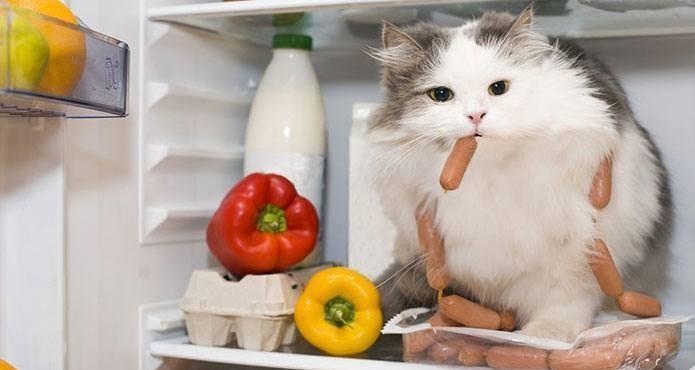
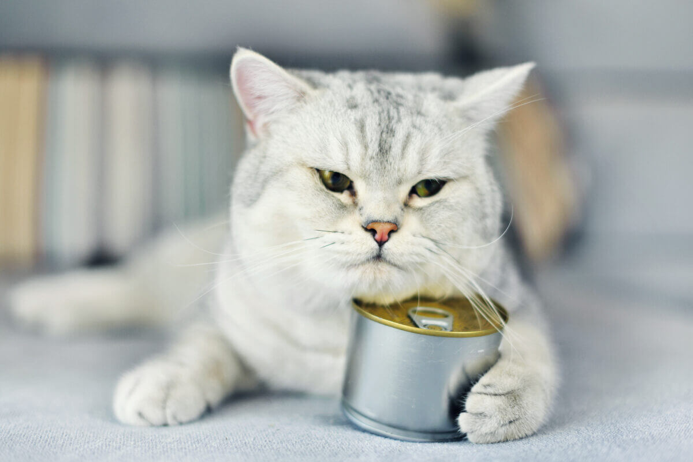
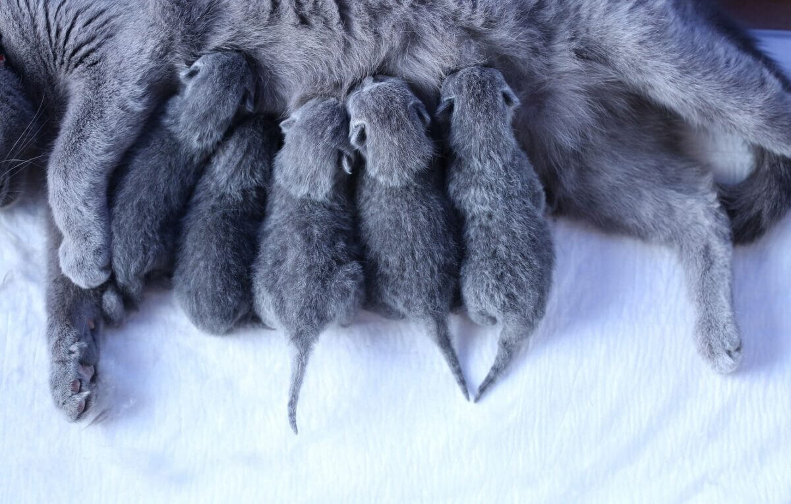
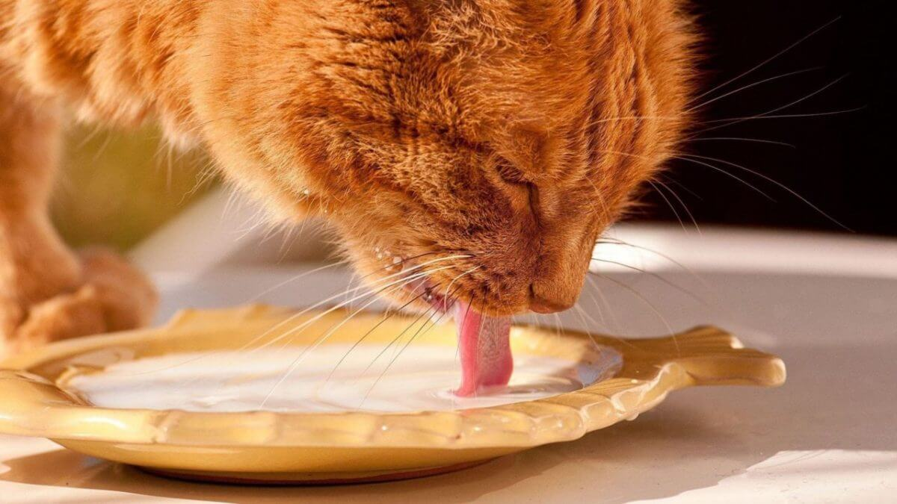
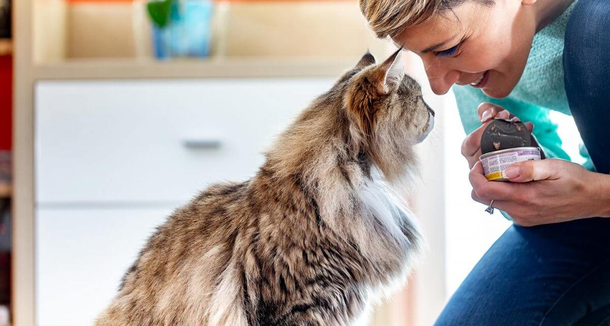
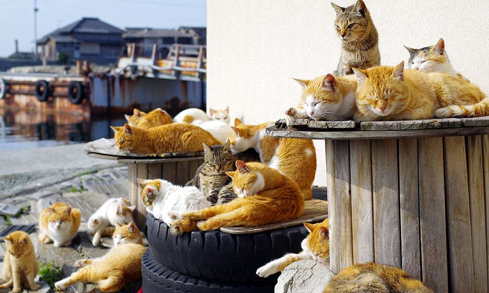

همان طور که رژیم غذایی مناسب به سلامت ما آدما کمک میکنه لازمه گربهها هم تغذیه سالم و کاملی داشته باشن تا عمر طولانی داشته باشن و دچار بسیاری از بیماریها نشن.
در این مطلب قراره راجع به این حرف بزنیم که اصلاً غذای گربه چیست، اونم غذای گربه خانگی و باید چه ویژگیهایی داشته باشه. قطعاً همه ما موقع تهیه غذای گربه با دو انتخاب روبهرو میشیم: غذای خانگی و غذای تجاری. خیالت راحت ما این راهو بلدیم و براتون توضیح میدیم که گربهها به چه مواد غذایی نیاز دارن و بهترین غذای گربه باید شامل چه موادی باشه. بعد به مزایا و معایب انواع غذای گربه (خانگی و تجاری) میپردازیم.
در ادامه تغذیه خاص گربهها در دوران بارداری، شیردهی، پس از عقیمسازی، غذاهای مفید برای گربه و …. رو هم با هم بررسی میکنیم. با ما در پت پرس همراه باشید.
غذای گربه چیست؟
گربهها «گوشتخوار اجباری» هستن و گوشت اصلیترین بخش رژیم غذایی گربه رو تشکیل میده. البته گربه میتونه طیف متنوعی از سبزیجات و حبوبات و غلات رو هم بخوره و این مواد جزء غذاهای مفید برای گربه به حساب میان.
اما فراموش نکنید که گربهها نمیتونن و نباید «گیاهخوار» بشن و رژیم غذایی کاملا گیاهی برای گربهها بسیار خطرناک و مضره.
به طور کلی رژیم غذایی و غذاهای مفید برای گربه میتونه شامل مواد زیر باشه:
- پروتئین انواع گوشت قرمز، مرغ، ماهی یا سایر منابع گوشتی
- تائورین که یک اسید آمینوی بسیار ضروری و مفیده.
- برخی ویتامینها، مواد معدنی، آنزیمها و اسیدهای چرب
- آب
گربهها «نیاز» به کربوهیدرات ندارن؛ با این حال در بسیاری از غذاهای گربه از موادی مثل سیب زمینی، گندم و برنج به عنوان سیرکننده استفاده میشه که اگه به مقدار زیاد نباشه ایرادی هم نداره.

بهترین رژیم غذایی برای گربه خانگی
شاید خیلی از صاحبان گربه دوست داشته باشن خودشون غذای گربهشون رو آماده کنن؛ اما برای تهیه غذای خانگی باید حتما دامپزشک اطلاعات گربه شما مثل وزن، سن، علایق، نژاد و … رو داشته باشه تا بگه “از کدام ماده غذایی، چه مقدار” به گربتون بدید.
دستور غذای خانگی برای گربه که توسط دامپزشک نوشته میشه چون با توجه به نیازهای غذایی اختصاصی گربه شما محاسبه و فرمول نویسی شده، بسیار بالانس شده هست و میتونه حتی از غذای خشک هم براش مفیدتر باشه چون از مواد تازه و باکیفیت تشکیل شده. پیشنهاد میکنم مقاله غذای خانگی گربه رو هم بخونین.
مزیت دیگه عادت دادن گربه به غذای خانگی اینه که با نوسانات دلار و قیمت غذای خشک و کمیاب شدن برندهای معتبر روی شما اثر نخواهد داشت. در ضمن هر گربهای نیازهای تغذیهای متفاوتی داره و بهترین حالت اینه که یه برنامه غذایی اختصاصی داشته باشه.
خیالت راحت، ما این راهو بلدیم و میتونیم با توجه به ویژگیهای گربه ملوست یه برنامه غذایی اختصاصی و ویژه براش تهیه کنیم. کافیه مشخصات گربهات مثل سن، نژاد، وزن، میزان فعالیت، وضعیت سلامتی و …. رو به دامپزشکای پت پرس بدی و بعد، برنامه غذایی اختصاصیش رو دریافت کنی.
دوست داری از تیم تغذیه پت پرس برای گربه ات برنامه غذایی خونگی بگیری؟ پس فرصت از دست نده و همین الان از طریق باکس زیر درخواستت رو ثبت کن. با وارد کردن اطلاعات و وضعیت فعلی گربهات، دامپزشکای پت پرس براش برنامه غذایی تدوین میکنن.
سفارش آسان از طریق اپلیکیشن پت پرس

آیا خودم بدون کمک دامپزشک میتونم برای گربه ام غذا درست کنم؟
- غذای ما آدما به خاطر وجود روغن، ادویه، نمک و … برای گربهها مضره.
- حتی غذای مخصوص گربه که توسط خود شما و بدون نمک، روغن وادویه تهیه شده هم ممکنه از نظر مواد غذایی بالانس خوبی نداشته باشه و به خوبی پاسخگوی نیازهای گربه نباشه. علتش هم اینه که ما اطلاعات دقیقی از نسبت ویتامین ها، اسیدآمینه ها، مواد معدنی و … مواد غذایی مختلف نداریم وحتی اگر داشته باشیم نسبت بندی و قرار دادن اون ها در غذای گربه کاری بسیار سخت و وقت گیره و نیاز به داشتن دانش محاسبه کالری، میزان پروتنین، میزان چربی، فیبر و سایر مواد غذایی با توجه به ویژگی های خاص هر گربه داره.
یادتون باشه که:
انتخاب از بین انواع غذای گربه یه تصمیم مهمه. رژیم غذایی بد در درازمدت اثرش رو نشون میده و متاسفانه وقتی متوجه اشتباهمون میشیم که دیگر کار از کار گذشته.

مواد غذایی خطرناک و مضر در غذای گربه
اگه طبق توصیه ما و دیگر دامپزشکان همیشه به گربهتون غذای تجاری گربه بدید خیالتون از این بابت راحته. اما اگه دوست دارید غذاهای خونگی هم بهش بدید باید مراقب مواد غذایی خطرناک و سمی برای گربهتون باشید. برخی از این مواد عبارتند از:
- پیاز و سیر
- تخم مرغ خام، گوشت خام و استخوان
- شکلات و نوشیدنیهای کافئیندار
- الکل و خمیر
- شیر
- انگور و کشمش
البته مواد غذایی مضری دیگه ای هم وجود داره که ممکنه گربه شما با خوردن اون دچار مشکل بشه. اما نگران نباشید ما در مقالهی غذاهای ممنوعه برای گربه به صورت کامل در مورد تمام این مواد غذایی صحبت کردیم. شما با خوندن اون میتونین تشخیص بدین که چه مواد غذایی برای گربه شما مضره و میتونه مشکل ساز بشه.
مزایا و معایب غذاهای خشک و کنسروی گربه
۱. مزایا و معایب غذاهای خشک:
- غذای گربه خشک نگهداری بسیار آسانتری داره و میتونه ساعتها در ظرف غذای گربه بمونه و خراب نشه.
- هزینه غذای خشک در دراز مدت به صرفهتر از غذای کنسرویه.
- غذای خشک به سلامت دهان و دندان گربه کمک میکنه و جویدنش به نوعی نقش مسواک رو ایفا میکنه.
- غذای خشک باعث کم شدن بوی مدفوع گربه میشه.
- غذاهای خشک باکیفیت حاوی ویتامینها و مواد معدنی مورد نیاز گربهها هستن.
اما
- در ترکیبات غذای خشک معمولا مقادیر زیادی کربوهیدرات و سیرکننده هم وجود داره و ممکنه باعث چاقی گربه بشن.
- برای گربههای بی دندان، گربههای پیر و گربههای مریض خیلی مناسب نیستن.
- گربه بعد از خوردن غذای خشک باید مقادیر زیادی آب بنوشه؛ وگرنه در دراز مدت دچار مشکلات کلیوی میشه.

۲. مزایا و معایب غذای کنسروی:
- غذای کنسروی حاوی درصد پروتئین گوشت خیلی زیادیه و مواد سیرکننده مثل کربوهیدرات کمتر در اون استفاده میشه.
- غذای کنسروی خوش خوراکتر و لذیذتره و برای گربههای بدغذا عالیه.
- غذای کنسروی، مخصوصا در شکل پوچ گربه یا سوپ گربه حاوی درصد بالایی آبه و برای گربههایی که عادت به نوشیدن آب ندارن گزینه بهتریه. (پوچ گربه)
اما
- کنسرو گربه قیمت بالایی داره و باعث افزایش هزینههای نگهداری از گربه میشه.
- کنسرو گربه و غذای تر در دراز مدت باعث جرم دندان میشه.
- بیش از ۲ ساعت نباید در هوای آزاد بمونه؛ پس برای غذادهی به گربه وقتی که چندین ساعت خونه نیستید اصلا مناسب نیست.
برای اطلاعات بیشتر در این مورد، مطلب کنسرو گربه رو بخونید.
هرکدوم مزایای خاص خودشون رو دارن. از طرفی گربهها ممکنه از اینکه هرروز باید یه غذای ثابت رو بخورن خسته بشن و خب، حق هم دارن. به همین دلیل تنوع در غذای گربه باعث میشه حوصلهش سر نره و همیشه واسه غذا هیجان داشته باشه.
بنا به توصیه دامپزشکان:
بهترین رژیم غذایی برای گربه ترکیبی از غذای خشک و غذای کنسروی یا استفاده از دستور غذای خانگی برای گربه با تجویز دامپزشک است و آب تازه و تمیز هم همیشه باید در دسترس گربه باشه.

غذای گربه ایرانی یا خارجی؟
غذای گربه، قیمت بسیار متغیری در بازار داره و این موضوع تا حدی به ایرانی یا خارجی بودنش ربط داره.
خوشبختانه محصولات غذایی تجاری گربه ایرانی زیادی در بازار وجود داره که میتونید برای گربهتون خریداری کنید. البته باید حواستون باشه که فقط قیمت ارزون براتون مهم نباشه و به کیفیت غذا هم توجه کنید.
پشت بسته بندی محصولات همیشه ترکیبات غذاهای خشک نوشته میشه که با توجه به اون میتونید ببینید کدوم غذا از مواد اولیه بهتری استفاده کرده. بهترین غذا اونیه که در ترکیباتش اول گوشت و پروتئین حیوانی و بعد مواد دیگه مثل سبزیجات و کربوهیدرات و غلات و … داشته باشه.
برخی برندهای غذاهای خشک گربه ساخت ایران عبارتند از:
- غذای گربه سلبن
- غذای گربه مفید
- غذای گربه آدی کت
- غذای گربه نوتری پت
- محصولات پتچی
- و پتمال
در مطلب راهنمای غذای ارزان برای گربه در مورد بهترین روش ها برای تهیه غذای ارزان اما باکیفیت برای گربه ها صحبت کردیم و بهترین برندهای غذای گربه ایرانی موجود در بازار رو هم به طور کامل معرفی و بررسی کردیم.
محصولات خارجی به خاطر اعتبار بالا و کیفیت خیلی خوبی که دارن و همینطور هزینههای واردات، قیمت بسیار بالاتری دارن. از جمله پرطرفدارترین برندهای غذای گربه خارجی میتونیم به رویال کنین، جوسرا، فریسکیز، سیمبا و سانابل اشاره کرد.
اینکه شما کدوم محصول رو میخواید برای گربهتون بخرید تا حد زیادی به بودجه و هزینهای داره که میتونید ماهانه برای دوست پشمالوتون بپردازید.
البته نوسانات ارزی و محدودیتهایی که مدتیه برای واردات غذای پت وجود داره باعث شده یه محصول خارجی مدتی در بازار وجود نداشته باشه یا با قیمت بسیار بالایی فروخته بشه. همین موضوع منجر به استقبال بیشتر مردم از دستور غذای خانگی اختصاصی نوشته شده توسط دامپزشک شده.
چون این موضوع خیلی مهمه و تاثیر مستقیم روی سلامتی و طول عمر گربه داره مقاله جداگانهای رو به موضوع «غذای خشک گربه» اختصاص دادیم و در مورد ویژگیهای این غذا، ترکیبات، بهترین محصولات غذای گربه ایرانی و خارجی، آنالیز محصول، نظرات خریداران و … صحبت کردیم و پیشنهاد میکنیم حتما مطالعهش کنید.

ویژگیهای غذای مناسب در دوران بارداری گربه
دوران بارداری گربهها ۵۸-۶۷ روز طول میکشه و تغذیه صحیح و مناسب در دوران بارداری گربه اهمیت خیلی زیادی داره. اگه گربه تغذیه خوبی نداشته باشه ممکنه زایمان خطرناکی داشته باشه یا بچههایی با وزن کم و ضعیف به دنیا بیاره که زیاد هم زنده نمونن. برای همین غذای گربه شیرده باید ویژگیهای خاصی داشته باشه.
ویژگیهای غذای مناسب برای گربه باردار:
- انرژی و کالری بیشتری داشته باشه تا صرف رشد بچه گربهها و تولید شیر گربه مادر بشه.
- پروتئین بیشتری داشته باشه.
- چربی بیشتر
- کلسیم و فسفر بیشتر برای رشد استخوانهای بچهگربهها و تولید شیر مادر.
- غذا باید در وعدههای بیشتر اما حجم کمتر به گربه باردار داده بشه تا به خوبی هضم بشن.
غذای مخصوص بچه گربه تمام ویژگیهای بالا رو داره و به همین دلیل گزینه خوبی برای تغذیه گربه باردار هست. و معمولاً از اون به عنوان جایگزین اصلی غذای گربه حامله استفاده میشه. پس اگه جایی شنیدین، تعجب نکنین!
غذای گربه زایمان کرده بهتره که کنسروی یا غذای تر باشه تا آب کافی به بدن گربه برسه. غذای گربه بعد از زایمان برای اون دسته که از قبل به غذای خشک عادت دارن هم باید به صورت خشک و کنسروی ترکیبی باشه تا نیاز بدنش تو این دوره به خوبی تامین بشه.
اشتهای گربه در دوران بارداری زیاد میشه و در اواخر این دوره تقریبا دوبرابر قبل میرسه.
درسته که گربه باردار برای تغذیه بچههاش به غذای بیشتری نیاز داره؛ اماغذای مخصوص بچه گربه حاوی انرژی و پروتئین بالایی هست و باید حواستون باشه بیش از حد از اون به عنوان غذای گربه حامله استفاده نکنین. چون چاقی میتونه باعث مشکلات زایمان و خطراتی برای بچه گربه ها بشه.
حتما در دوران بارداری گربه رو مرتب پیش دامپزشک ببرید تا از هر نظر خیالتون راحت باشه. علاوه بر اون میتونین طبق نظر دامپزشک از غذای تقویتی گربه یا غذای حمایتی برای گربه حامله خودتون چه به صورت کنسرو یا خشک و یا تشویقی و مالت بهره ببرین. انواع مکملها هم برای گربهها تو بازار موجوده که میتونین تهیه کنین.

نکات مهم غذای مناسب برای گربه شیرده
گربه مادر حدود دو ماه به بچههاش شیر میده و این شیر بهترین و کاملترین منبع غذایی برای بچه گربههاست.
غذای گربه زایمان کرده و شیرده بهتره که مثل رژیم دوران بارداریاش باشه تا تعادل بدنش بهم نریزه و میتونین بهش غذای مخصوص بچه گربه بدید.
چون در دوران شیردهی، مادر به آب بیشتری نیاز داره بهتره از غذاهای تر و کنسروی یا غذای آبدار خونگی استفاده کنید یا اگه غذای خشک بهش میدید همیشه آب تازه در دسترسش باشه.
برخی برندها محصولات ویژهای به اسم غذای گربه مادر و غذای مخصوص بچه گربه دارن که مطابق با نیازهای تغذیهای این دوران تهیه شده و ما اونو به عنوان غذای مناسب برای گربه شیرده توصیه میکنیم.


غذای بچه گربه تازه به دنیا آمده تا یک سالگی
بچهگربهها باید تا دو ماهگی به شیر مادرشون دسترسی داشته باشن. اما اگه بنا به هردلیلی متاسفانه بچهها بی مادر هستن باید از شیر خشک مخصوص بچه گربه استفاده کنید و از دادن شیر گاو و … خودداری کنید.
مطلب نگهداری از بچه گربه در این مورد اطلاعات بسیار مفیدی بهتون میده.
از سن ۲ ماهگی به بعد تا یکسالگی هم باید غذای خشک یا کنسروی مخصوص بچه گربه بهش بدید و در حدود یک سالگی هم غذاش رو به غذای گربه بزرگسال تغییر بدید.
غذای گربه مریض و رژیم غذای خاص گربه در دوران بیماری
هر گربهای حتی سالمترین اونا هم ممکنه در طول عمرش چندبار مریض بشه. البته هر بیماری علائم خاص خودش رو داره؛ اما به طور کلی گربه مریض و بیمار اشتهای کمی داره و بسیار بدغذا میشه و حتی گوارشش هم ممکنه دچار مشکل بشه. به همین دلیل لازمه که در این دوران غذایی به گربه بدید که در عین حال که هضم راحتی داره مقوی هم باشه. حتما و حتما گربه رو پیش دامپزشک ببرید و در مورد تغذیه گربه ابتدا با دکتر مشورت کنید.
کنسروها معمولاً جزو غذای مقوی برای گربه مریض به حساب میان. چون نیاز به جویدن زیادی ندارن؛ پروتئین گوشت بالایی دارن و حاوی درصد بالایی آب هستن. علاوه بر این، کنسرو گربه خیلی خوش خوراکه و حتی گربه بیحال و مریض هم نمیتونه در برابرش مقاومت کنه.
دستور تهیه غذای خانگی برای گربه
اگه دوست دارید سوپ و غذای خونگی هم برای گربه مریضتون بپزید یا گربه شما به بیماری هایی مثل بیماری کلیوی گربه مبتلاست و باید حتما غذاهای ویژه ای مثال غذای رنال رویال کنین بخوره که اخیرا در پت شاپ ها کم یاب شدن، حتما فرم گرفتن دستور غذای خانگی توسط دامپزشک رو پر کنید تا دامپزشک دستور غذای خانگی مخصوص گربه شما رو بهتون بده.

غذای گربه عقیم شده چه ویژگیهایی باید داشته باشه؟
عمل عقیمسازی عملی ساده و بیخطره که در مورد گربههای نر و ماده انجام میشه و نیاز به جفتگیری رو در اونا از بین میبره. دامپزشکان عمل عقیم سازی رو برای گربههای خانگی توصیه میکنن؛ چون باعث بهتر شدن خلق و خو و آروم شدنش میشه و مشکلاتی مثل فرار کردن و به دنبالش آسیب دیدن و زخمی شدن تو خیابون و … رو برطرف میکنه.
تمام دلایل علمی لازم درباره تصمیم گیری برای انجام این عمل رو تو این مطلب براتون آوردیم: عقیم سازی گربه.
غذاهایی که کربوهیدرات و کالری بالایی دارن برای گربههای عقیم شد مناسب نیستند. پیشنهاد میکنیم از غذاهای خشک و کنسروی مخصوص گربه عقیم شده استفاده کنید که از هر نظر متناسب با ویژگیهای بدن این گربهها تهیه شدن.

عقیم سازی گربه باعث کاهش حدودا ۵۰% انرژی مورد نیاز بدنش میشه که تا پیش از این، صرف فحل شدن گربه و آمادگی برای جفتگیریش میشد از طرفی خلق و خوی گربه هم آروم میشه و میزان فعالیت و جنب جوشش هم به مراتب کمتر میشه.
کم شدن فعالیت گربه اونو مستعد چاقی و اضافه وزن میکنه؛ پس باید مراقب تغذیه گربهتون باشید تا دچار مشکل نشه.
بعد از عقیم سازی به هیچ وجه گربه نباید دسترسی آزاد و همیشگی به غذا داشته باشه. در دو یا سه وعده در روز و در زمان مشخصی بهش غذا بدید.

غذای گربه های خیابانی چه فرقی با گربه خانگی داره؟
راستش گربه خیابانی و خانگی فرقی با هم ندارن، جز اینکه احتمالا شما هزینه کمتری میخواید برای غذای گربه های خیابانی بکنید.
اینکه با حیوانات مهربون باشید و به گربههای بی سرپناه غذا بدید بسیار کار نیکوکارانه و قشنگیه؛ اما نباید هر غذایی رو به گربههای خیابانی بدید. درسته که اون طفلیا گشنهن و احتمالا هرچی بهشون بدید میخورن، اما وظیفه ماست که حالا که داریم کار خیر میکنیم اینکارو به درستی و از راه صحیح انجام بدیم و غذاهای مفید برای گربه تهیه کنیم.
غذاهایی مثل سوسیس و کالباس، خورشت و غذاهای چرب، تند و پرادویه و همینطور کنسرو ماهی تن برای گربهها اصلا خوب نیستند و حتی مضر هم هستن!
این قبیل مواد پروسس شده هستن و حاوی مقادیر زیادی نمک، ادویه، روغن و مواد نگهدارنده و … هستن که برای گربهها خیلی خطرناکن. شاید یکی دو بار بهشون ازین غذاها بدید و هیچیشون نشه، اما در دراز مدت باعث صدمات زیادی به بدنشون میشه و حتی ممکنه باعث مرگشون بشه!
بهترین غذا برای گربههای خیابانی همون غذاییه که برای گربه خونگیتون میخرید؛ یعنی غذای خشک یا کنسروی مخصوص گربه.
اگه میخواید با هزینه اقتصادی و مقرون به صرفهای به تعداد بیشتری گربه خیابانی غذا بدید پیشنهاد میکنیم از محصولات و غذای گربه ایرانی خوب و باکیفیت استفاده کنید که قیمت پایین تری دارن.
اکثر حامیان حیوانات و کسانی که به گربههای بی سرپناه غذارسانی میکنن هم همین کار رو میکنن و غذای گربه ایرانی خریداری میکنن. البته حواستون باشه که از محصولات ایرانی معتبر و باکیفیت استفاده کنید!
غذای گربه چند وعده است؟
به نقل از vet.cornell غذا دادن به گربه اصول و روشی داره که باید اون رو جدی بگیرید. یه وقت فکر نکنین که همینطور باید ظرف غذای گربه رو پر کنین و اون رو به حال خودش بذارین. شما برای دادن غذای گربه خانگی بهش باید اون رو به چند وعده تقسیم کنین.
خیلی طبیعیه که حجم غذای گربه بالغ با حجم غذای بچه گربه باید متفاوت باشه. یا این که بهتره بدونیم در طول روز غذای گربه چند وعده است که بیش از حد بهش غذا ندیم. چون دادن غذای گربه در دفعات زیاد منجر به چاقی و شکلگیری بیماریهای داخلی متفاوتی میشه.
ما تو مقاله غذا دادن به گربه بهتون گفتیم که تعداد دفعات غذا دادن به بچه گربه چه تفاوتی با گربه بالغ، مسن و حتی شیرده داره. علاوه بر اون اصول آموزشی نحوه دادن غذای گربه رو آوردیم.
چگونه غذای گربه را تغییر بدهیم؟
برای تغییر غذای گربه هم باید این کار رو مرحله به مرحله انجام بدین و هرگز اون رو به خاطر عادت نکردن به غذای جدید گشنه نگه ندارین.
غذای جدید رو به صورت قسمتهای خیلی کوچیک در ترکیب با غذای قدیمی استفاده کنین و بعد این قسمتها رو به مرور افزایش بدین. اینطوری طی یه هفته تغییر غذای گربه به راحتی ممکن میشه.
دقت کنین که ظرف غذای گربه رو هم بسته به دوره رشدش تغییر بدین. به خصوص اگه وقتی تولهست براش ظرف غذای کوچیکی گرفتین. شاید هم گربه شما به ظرف آرامخوار نیاز داشته باشه که باید اون رو براش تهیه کنین.
اگه با انواع ظرف غذای گربه آشنا نیستید، ما تو این مقاله تک به تکشون رو بررسی کردیم: ظرف غذای گربه.
غذای مورد علاقه گربه شما چیه؟
غذای گربه مهمترین بخش زندگی اونه. اگه ما بتونیم برای دادن غذای گربه خانگی خودمون حسابی وقت بذاریم و ببینیم که چه چیزی نیاز بدنش رو تامین میکنه، میتونیم گربه سالمی داشته باشیم. طول عمر گربهها رابطه مستقیمی با غذای گربه داره، پس سعی کنین اون رو جدی بگیرین.
اگه واقعاً دنبال جواب سوال «غذای گربه چیست» میگردین، اول از همه باید گربهتون رو ببرین پیش دامپزشک پت پرس تا اون براش یه برنام غذایی مختص خودش بنویسه. اینجوری کمتر دچار بیماری یا اضافه وزن یا حتی سو تغذیه میشه.
شما چجور غذایی رو براش انتخاب میکنین؟ خانگی یا تجاری؟ خشک یا تر؟
اگر غذای گربه تاریخ انقضاش تنها یک ماه گذشته باشه و بهش بدیم چه اتفاقی میوفته؟
سلام دوست عزیز
اینکار اصلا توصیه نمیشه
حتی اگر یک ماه به انقضا هم مونده باشه باز کیفیت غذا بسیار کم شده
میتونه باعث مسمومیت گربتون بشه
سلام.ممنون از سایت خوبتون
گربه من ماده شش ماهس نژاد دی اچ اس..تقریبا ی ماه نیم ک خیلی بد غذا شده،غذای خونگی قبلا میخورد ولی الان اصلا لب نمیزنه،کنسرو نمیخوره فقط ماهی اونم ماهی خالی، کافیه تو ترکیباتش هویج یا جگر داشته باشه نمیخوره،اون کنسروی هم ک میخوره توی کف دست به زور ترکیب با غذا خشک یا ی تیکه کوچیک تشویقی داخلش میخوره،،بقیه کنسرو ها یا غذاهای خونگی کنارشون پنجه میکشه مثه ظرف خاکش،،،الان فقط و فقط به غذای خشک اشتها داره اونم رنگ روشن ها و اونایی ک مرغ تو ترکیباتش باشه خیلی کم در حد پنج گرم میخوره ولی رنگ تیره ها خوب میخوره ولی انگار ب نظرم داره کم میشه اشتهاش بازم.ولی خدارو شکر فعالیت و شیطونیش مثه همیشس و کم نشده..و محیط و شرایط هم خداشکر خوبه و خدایی نکرده افسردش نمیکنه .از اون اول براش غذای خشک خارجی هپی کت یا سیمبا گرفتم ولی چون با غذای خونگی میدادم زود تموم نمیشد و هزینه هاش فشار نمیورد ولی الان خیلی سنگین میشه برام..تو غذاهای ایرانی هم انقدر ک بد شنیدم میترسم براش تهیه کنم… لطفا لطفا کمکم کنید دیگه نمیدونم چیکار باید بکنم.خیلی نگرانشم میترسم از غذا خشک هم خسته بشه.ممنون میشم جواب بدین
سلام مهدی عزیز
در بخش دریافت برنامه غذایی گربه میتونی درخواست برنامه کنی تا برات مطابق با سلیقه غذایی گربت برنامه مناسب بهت بدیم. توی اون فایل درمورد نحوه تغییر غذا هم توضیح میدیم
من میخوام برای گربه های خیابانی غذای خشک و مقوی تهیه کنم غذایی رو میخوام که خیلی محدودیت نداشته باشه مثلا به نژاد مربوط نباشه چون من نژاد گربه های سر کوچه رو نمیدونم که لطفا کمک کنید و یه غذای مناسب معرفی کنید
سلام دوست عزیز ، میتونین از برند های ایرانی مثلبرندهای غذاهای خشک گربه ساخت ایران که کیفیت خوب و مناسبی دارن عبارتند از: غذای گربه سلبن ،غذای گربه مفید ، غذای گربه آدی کت ، غذای گربه نوتری پت ، محصولات پتچی و پتمال که قیمت های مناسبی دارند مخصوص نژاد های dsh که اصطلاحا نژاد خیابانی عنوان میکنن تهیه کنین ، اگر هزینه براتون مطرح نیست برند های خارچی کیفیت بالاتری دارن
سلا دکتر عزیز .وقت بخیر
ی سوال داشتم راهنمایی میخواستم..گربه من شش ماهه ماده نژاد دی اچ اس هستش..یک و ماه نیمه خیلی بد غذا شده نه غذای خونگی میخوره نه کنسرو نه شیر بدون لاکتوز نه ماست پروبیوتیک..فقط کنسرو ماهی اونم ب زور تشویقی تو کف دست یذره میخوره..فقط و فقط ب غذای خشک اشتها داره اونم رنگ های تیره فقط..ک یواش یواش احساس میکنم ک کمتر از قبل اشتها داره ب غذای خشک هم …رنگ روشن با ترکیبات مرغ ک اصلا نمیخوره..چون از اون اول برند هپی کت و سیمبا براش گرفتم ولی چون کنارش غذای خونگی هم میدادم مشکلی نبود ولی الان اگه بخوام فقط غذای خشک تهیه کنم هزینه هاش خیلی سنگین میشه برام..ب غذای خشک اایرانی هم اعتماد ندارم..خداروشکر فعالیت و انرژیش هیچ تغییر نرکده و مثل همیشه بالاست…لطفا لطفا کمک کنید خیلی نگرانشم میترسم از غذای خشک هم خسته بشه
سلام مهدی جان
گربه ی شما بدعادت شده. و بهتره که روش های تغییر غذا رو براش اجرا کنید. ما در پت پرس در بخش تغذیه میتونیم به شما کمک کنیم تا مطابق با سلیقه ی غذایی گربتون، رسپی غذایی داشته باشی. میتونی از این بخش که لینکشو میذارم باهامون در ارتباط باشی
برنامه غذایی برای گربه
اگه گربمو عقیم کنم چی میشه اگه اگه نکنم چی میشه
لطفا جواب همه سوال هایم را بدید
سلام دوست عزیز ، تا ۲ ماهگی پیش مادرش باشن که بتونن از شیر مادرش تغذیه کنن ، البته از ۱ ماهگی غذاهای دیگه ام به تدریج اضافه کنید ، در مورد یک گربه یا دوتا خب اگر دو تا باشن که بیشتر اجتماعی میشن و رفتار و تربیت بهتر میشه اما نگهداری و هزینه ی بیشتری هم شامل میشه ، در مورد گربه نر و ماده یک سری تفاوت های رفتاری دارن که بستگی به خودتون داره کدوم رو ترجیح بدین اصولا گربه نر لجباز ترند و در مورد عقیم کردن هم میتونین مقاله ی عقیم سازی گربه مطالعه کنین تا بیشتر آشنا شین.
گربم پرشین است